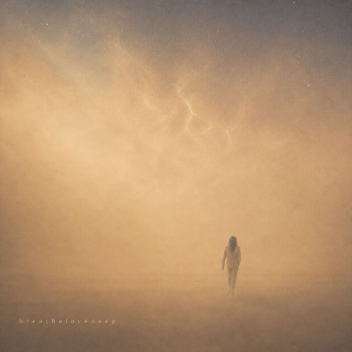
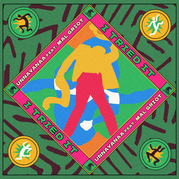
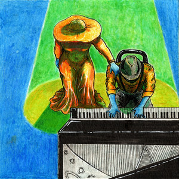
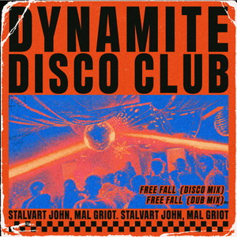
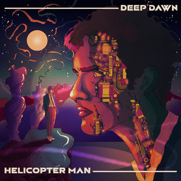

2026
Queens, New York — based in India
Mal
Griot
Singer · Songwriter · Poet · MC/Host · Live Looper · Voice Actor
Press & Booking Kit

Born and raised between Brooklyn and Queens, New York, on soul records and church harmonies, Mal Griot is a vocalist, spoken-word artist, and voice actor now based in India. His work moves across Afro-house, funk, and soul — low end that holds you, vocals that get close to the mic and stay there.
Most recently heard on breathe love d e e p, ten pieces about stillness, breath, and the space between one thought and the next, and on "I Tried It" alongside producer Unnayanaa on Wind Horse Records — a track Magnetic Magazine called a fusion of "house grooves and poetic storytelling."
Every performance is built to feel like an experience rather than a concert: transitions, lighting, atmosphere, and silence all matter as much as the notes.
"Create work that people return to years later."
Singer · Songwriter · Music Producer · Performer · Poet · Live Looper · MC/Host · Voice Actor
Afro-House · Funk · Soul · Hip-Hop · Neo-Soul · Jazz · R&B · Spoken Word · Ambient · Cinematic
Queens, New York (origin) — currently based in India. Available for international bookings.

A full-length body of work built on groove and restraint. Ten pieces about stillness, breath, and the space between one thought and the next.

2025 I Tried It with Unnayanaa · Wind Horse Records · Spotify
2026 Toxic Baby Album · Spotify
2026 Free Fall EP · Spotify
2026 Helicopter Man EP · Spotify 2026
The Call of the Jungle (Overmind)
EP · Spotify
2026
The Call of the Jungle (Overmind)
EP · Spotify
Full catalog, including SoundCloud-only and unofficial uploads, at soundcloud.com/mal-griot and open.spotify.com/artist/61bgVlMQw2S0t6d8mVPVIS.


Solo, looped, or full-band — sets built for intimate rooms and festival stages alike, from Sofar Sounds showcases to club and gallery bills. Live looping, keys, and vocal FX build full arrangements in real time.
A wide vocal range — falsetto to baritone — delivered in a warm, all-American accent. Work spans character voice acting, audiobook narration (including 25 distinct characters voiced for the audiobook Forget Me Not by JT Ezra), guided meditations, and commercial VO.

Booking a show, commissioning a voice-over, or setting up a session — reach out and it goes straight to Mal.